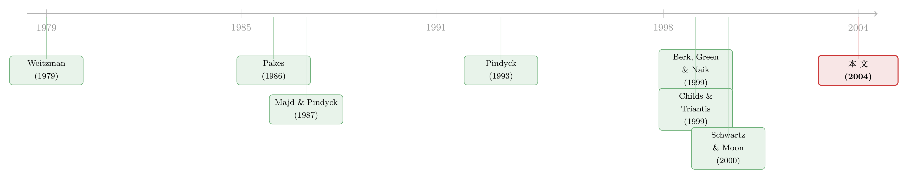

R&D 的技术风险明明是「赌运气」，为什么它的折现率反而更高？
本文读的是 Berk, Green & Naik (2004, Review of Financial Studies)：一个 R&D 创业项目的多阶段投资模型说明，虽然「钻不钻得出油」「药能不能过审」这类技术风险确实是可以分散的特质风险，但正在研发中的项目，其要求回报（risk premium）反而高于研发完成、开始稳定产生现金流之后的同一个项目——因为未完成的 R&D 本质上是一份写在系统性现金流上的复合期权，而期权的隐含杠杆会把系统性风险放大。
1 引言：一个写在教科书里的「错觉」
打开任何一本公司金融的教科书，讲到风险与折现率，几乎都会拿 R&D 来举例子。
Brealey 和 Myers 的《Principles of Corporate Finance》里就写得很直白：石油勘探打出一口干井（dry hole）、一种治脱发的新药被 FDA 否决，这些都是「坏结果」，但它们「反映的是独特的（即可分散的）风险，并不会影响投资者所要求的期望回报率」。Brealey、Myers 与 Marcus 在另一本书里说得更形象——对一家公司而言，重要的是「平均的成功率」，地质风险（有油没油？）应该会在「成千上万次独立的下注」里被平均掉，所以一个全球钻探计划的风险，远小于任何单口野猫井（wildcat well）看上去的那种风险。
听起来天衣无缝，对不对？技术风险是特质的（idiosyncratic），特质风险可以分散，可分散的风险不要补偿——于是 R&D 不该要求一个特别高的折现率。
这篇文章想说的是：这个推论很天真。
它天真在哪里？Berk、Green 与 Naik（下称 BGN）给出的答案，是本文要反复讲透的那「一个核心」：技术风险本身确实不要补偿，但「要不要继续做这个 R&D」这个决策，是盯着系统性的不确定性来做的。换句话说，地质风险也许真的能分散，可是「这口井还要不要接着打」，是看着当下的油价（一个高度系统性的变量）决定的。这一下，就把整个项目变成了一份复合期权（compound option）——一份建立在系统性现金流之上的期权。而期权因为隐含的杠杆，系统性风险天然就比标的资产更高。
一句话的直觉：你能不能把油田的「地质运气」分散掉是一回事；可只要你保留了「油价跌了就停钻、油价涨了就接着钻」的权利，你手里攥着的就是一份看涨期权，而期权的 beta 永远高于油本身。
2 把一个创业项目，拆成四种风险
要把上面这个故事讲严谨，先得把一个新创项目（new venture）里混在一起的风险，干净地拆开。BGN 的模型设定，正是为了让四种「质地完全不同」的不确定性各归各位。
设想一家公司只有一个 R&D 项目。项目要穿过 \(N\) 个离散的研发阶段才算完成；用 \(n(t)\) 记到 \(t\) 时刻已经成功通过的阶段数，那么还剩 \(N-n(t)\) 个。一旦研发完成，公司就开始领取一串随机现金流 \(x(t)\)。这一路上，有四种风险：
第一种，技术风险（technical risk）——特质的。 每一期公司要决定投不投，记投资强度 \(u(t)\in\{0,1\}\)。投了（\(u(t)=1\)），就以某个瞬时概率 \(\pi\,dt\) 通过当前阶段、进入下一阶段；不投，则这一阶段「冻结」在原地，项目被「封存（mothball）」。「过没过这一关」是纯特质的运气。
第二种，未来现金流的不确定性——系统性的。 这是模型里唯一的系统性风险来源。即便项目还没完成，公司也能观察到「假如今天就完工，能挣多少」的那个潜在现金流 \(x(t)\)，它服从一个标准的几何布朗运动（geometric Brownian motion）：
$$dx(t) = \mu\, x(t)\, dt + \sigma\, x(t)\, dz(t). \tag{1}$$
关键在于 \(dz(t)\) 与定价核（pricing kernel）的创新相关——所以 \(x(t)\) 带着系统性风险。
第三种，灾难性失败 / 过时（obsolescence）——特质的。 以瞬时概率 \(\phi\,dt\)，现金流（无论是已实现的还是潜在的）被一次性抹平，项目价值归零。比如一种更好的疗法出现，让你这个药彻底没用了。这个过程与 \(x(t)\)、与定价核都独立，所以是特质风险，在估值里它的作用相当于一个折旧率，被吸收进折现率里：
$$\hat r \equiv r + \phi. \tag{10}$$
第四种，边干边学（learning by doing）——特质的。 公司事先并不知道自己的研发生产率 \(\pi\) 到底有多高，只能在一次次投入与观察中、用贝叶斯（Bayesian）方式去更新它。这一条是全文后半段的精华，我们留到第 5 节。
四种风险里，只有第二种是系统性的。这就埋下了全文的张力：系统性风险只有一个来源，可它最后却能把一个「全是特质风险」的研发活动，定价成一份高 beta 的资产。
3 核心机制：把项目写成一个动态规划，再让期权说话
现在把估值问题写出来。沿用 Berk, Green & Naik (1999) 的做法，BGN 取偏均衡（partial equilibrium）的视角，把定价核当成外生：
$$d\nu(t) = -r\,\nu(t)\,dt + \varphi\,\nu(t)\,dw(t), \tag{6}$$
并定义风险的市场价格（market price of risk）为
$$\lambda = \sigma\varphi\rho, \tag{7}$$
其中 \(\rho\) 是现金流的布朗运动 \(z(t)\) 与定价核的布朗运动 \(w(t)\) 之间的「局部相关性」。这一步说白了，就是给「系统性」一个具体的价签：现金流和定价核越相关（\(\rho\) 越大），\(x(t)\) 这股不确定性就越值钱、越要补偿。
接着，做两步标准的化简。其一，灾难性失败 \(\xi(t)\) 与其他一切独立，可以直接用它的期望 \(e^{-\phi(s-t)}\) 替换掉，于是失败风险被折进 \(\hat r = r+\phi\)。其二，转到风险中性测度（risk-neutral measure），现金流的漂移项扣掉风险的市场价格：
$$\hat\mu \equiv \mu - \lambda, \qquad dx(t) = \hat\mu\, x(t)\, dt + \sigma\, x(t)\, d\hat z(t). \tag{11,12}$$
到这里，项目价值 \(V_{n(t)}(x,y)\) 就是下面这个动态投资问题的最大值——这也是整篇文章的「主方程」，我们把它逐块标注出来：
把这个式子里的几个角色看清楚，故事就清楚了。
首先，投资成本被参数化为 \(I(t)=a+bx(t)\)（eq 5）：\(a\) 是固定成本，\(b\) 是随现金流规模变化的可变成本。BGN 指出，模型最重要的定性洞见，在 \(b=0\)（纯固定成本）时就已经全部出现——此时研发投入完全没有系统性风险，公司手里的，就是一份以「随机但无系统性风险的行权价」去换取「有系统性风险的现金流 \(x\)」的期权。
接着，一个自然的问题是：既然行权价（投资成本）没有系统性风险，标的（未来现金流 \(x\)）有系统性风险，那这份期权的系统性风险，会比标的本身更高还是更低？答案是更高。这正是期权的隐含杠杆：标的涨一点，期权的价值涨得更凶；用 beta 的语言说，看涨期权的 beta 高于标的的 beta。于是——未完成的 R&D，其要求回报高于完成后的项目。
然后，BGN 把这个直觉做成了可用的上下界。他们证明，R&D 的风险溢价（也就是「纯增长型」公司的资本成本）有解析形式的上界与下界：
- 下界＝研发完成后那个传统现金流项目本身的风险溢价（标的的 beta 对应的溢价）；
- 上界＝项目被封存或推迟时的风险溢价——通常出现在项目生命的早期。
这两个界因为足够简单，本身就有应用价值：当你要给一家「还没有现金流、只有故事」的初创公司估算资本成本时，它给了你一个区间，而不是一个拍脑袋的数字。
但真正关键的一步在于这条溢价曲线的动态：随着项目逼近完成，风险溢价从上界非线性地下降到下界；而且，这种下降在「公司刚刚开始积极研发」的那一刻附近，最为陡峭。也就是说，一家公司从「封存观望」切换到「真刀真枪地投」的那一瞬间，它在资本市场眼里的风险属性会发生剧烈的变化。有意思的是，BGN 还指出，在某些参数下，溢价也可能在项目生命中途回升——这与那种「越接近成功风险越低」的朴素直觉并不一致。
（关于「实物期权 + 系统性风险如何决定股票收益」这条线，可一并参见《供给会「变软」的那一刻：不可逆投资如何写出股票的波动节律》与《竞争越激烈，反而越要「等」？》。）
4 于是反转出现：特质不确定性的「解决」，居然能搬动溢价
讲到这里，最反直觉、也最漂亮的结论才浮出水面。
我们一直说技术风险是特质的、不要补偿。这没错。但 BGN 强调：特质不确定性被「解决」的过程，本身会改变整个项目的风险溢价。
为什么？因为随着技术（特质）不确定性逐步揭晓，「项目能否及时、成功完成」的概率在变；而这个概率的变化，会改变那份「暂停投资」的期权的性质——而这份期权，是盯着未来那串系统性现金流来行权的。于是，虽然没有任何一分钱的溢价是为特质风险本身支付的，特质不确定性的解决，却能大幅改写整个项目的系统性风险溢价。
这是全文那个核心张力的最终落点：系统性风险只有一个出口（\(x\) 的波动），可特质风险通过「改变期权的形状」这条暗道，间接地把自己写进了折现率里。
5 边干边学：为什么「早期的失败」格外致命
模型的后半段，BGN 放松了「公司知道自己研发能力」这个假设。这一步让模型从一个干净的封闭解（closed-form，在能力已知时他们求出了据其所知尚属首次的解析解）走向数值求解，但也带来了最贴近现实的那部分洞见。
公司对自己的生产率 \(\pi\) 持有一个先验，并据历史更新。后验估计 \(\pi(t)\) 是已完成阶段数 \(n(t)\) 与累计投入时间 \(y(t)\equiv\int_0^t u(s)\,ds\) 的函数。Lemma 1 给出一般形式：
$$\pi(t) = \pi(n(t),y(t)) = -\,\frac{\Phi^{(n(t))}(y(t))}{\Phi^{(n(t)-1)}(y(t))}, \qquad \Phi(y) = E\big[e^{-y\,\zeta}\big], \tag{2,3}$$
其中 \(\Phi\) 是参数为 \(\zeta\) 的泊松过程（Poisson process）的生成函数（拉普拉斯变换）。直觉非常朴素：投入很猛（\(y\) 高）却进展寥寥（\(n\) 低），就是关于自己研发能力的坏消息。
而当先验取伽马分布（gamma distribution，参数 \(\alpha_1,\alpha_2\)）时，更新公式简单得惊人：
$$\pi(n(t),y(t)) = \frac{\alpha_1 + n(t)}{\alpha_2 + y(t)}. \tag{4}$$
成功一次，分子加一；多熬一段时间，分母加一。
学习带来的后果是什么？BGN 给出的答案是：「早期的技术不确定性」的解决，对价值与期望收益的影响，远大于项目后期的技术成败。 因为公司在每个阶段只能容忍一定次数的失败，而这个容忍阈值在早期很低。于是会出现这样的情形：两家一模一样的公司、做一模一样的项目，结局可能天差地别——一家早期运气好、连续突破，最终完成；另一家早期运气差，于是最优地选择放弃，从此再也没机会知道自己其实「本可以成功」。
这一点把「边干边学」与 Pindyck (1993)、Schwartz & Moon (2000) 那类模型区分开来：在后者里，不确定性随经验的下降是外生设定的；而在 BGN 这里，它是模型内生解出来的——当投资为零时，剩余完工时间的条件预期的创新也为零，所以这才是名副其实的「边干边学」。
6 文献脉络
把这篇文章放回它所在的那条河里，能更清楚地看到它的位置。
最上游，是一大批研究单个公司动态 R&D 策略的经济学文献：Weitzman (1979) 的「最优搜索」、Pakes (1986) 把专利当期权来估值、以及 Grossman & Shapiro (1986) 等。这一支的共同特征是——关注的是最优策略，而不是估值；它们通常假设风险中性或凹效用，于是天然地排除了「系统性风险如何定价」这个问题。
中游，是把 R&D 看成一份「或有索取权（contingent claim）」的实物期权文献：Majd & Pindyck (1987) 研究「需要持续投入才能完工、且有最大投资速率」的项目；Pindyck (1993) 处理「成本不确定」的投资；Childs & Triantis (1999) 数值刻画多项目并行 / 串行的最优策略；Schwartz & Moon (2000) 则同时容纳了三种不确定性，与本文最接近。但这一支有一个共同的「捷径」——它们把完工后项目的价值直接当成一个外生的扩散过程，再在其上定价。
而本文的位置，恰恰是把这个捷径补上：BGN 不外生给定项目的价值，而是外生给定底层现金流 \(x(t)\)，然后同时为现金流和 R&D 项目定价。正因为把「标的的价值」也一并推导了出来，他们才能聚焦于本文真正关心的那个问题——R&D 与其底层现金流之间相对的系统性风险，以及由此而来的溢价动态。它与作者们自己的 Berk, Green & Naik (1999) 一脉相承，都是把实物期权与系统性风险定价缝在一起的尝试。

评论与延伸（Q&A + 研究方向）
(a) 几个可能的疑问
Q：技术风险既然是特质的，凭什么它的「解决」能改变系统性溢价，这不自相矛盾吗？
不矛盾。补偿从来只付给系统性风险（\(x\) 的波动），这一点没变。变的是「期权的形状」：技术不确定性的揭晓改变了「成功完工」的概率，从而改变了那份盯着系统性现金流的暂停期权的 delta 与隐含杠杆。换句话说，特质风险不直接被定价，但它通过改变期权对系统性风险的敞口，间接搬动了溢价。
Q：所谓「R&D 溢价高于完工项目」，到底是和谁比？
和「同一个项目、研发已完成、开始稳定产生现金流 \(x\)」的状态比。完工项目的溢价是模型给出的下界；正在研发、尤其是被封存 / 推迟的项目，溢价接近上界。所以这不是在比较两家不同的公司，而是同一个项目在生命周期不同阶段的自我对照。
Q：把现金流设成几何布朗运动、把灾难失败设成独立泊松冲击，会不会太干净了？
会，这是模型为可解性付出的代价。好处是它能给出封闭解和解析的上下界，把机制讲得一清二楚；代价是它排除了「现金流的系统性风险本身随时间变化」「失败概率与宏观相关」这类更现实的设定。但作为一个旨在厘清机制的模型，这种取舍是合理的。
Q：和 Schwartz & Moon (2000) 到底差在哪？
差在两点。其一，S&M 把「完工成本」直接设成一个外生的扩散过程，但并未验证「在最优投资策略下，完工成本是否真的具有他们假设的那种形式」——所以在理性预期意义上不是动态一致（dynamically consistent）的；BGN 则外生给定推进技术、内生导出完工成本，绕过了这个问题。其二，S&M 不评估 R&D 与底层现金流的相对系统性风险，而这恰恰是 BGN 的主菜。
Q：「边干边学」为什么让早期失败格外致命？
因为公司在每个阶段能容忍的失败次数有限，且这个阈值在早期最低。早期的坏消息会迅速把后验生产率 \(\pi=(\alpha_1+n)/(\alpha_2+y)\) 压低，触发最优放弃；项目一旦被放弃，公司就永远学不到它「本来的」盈利能力。于是早期的运气，被学习机制放大成了命运。
Q：这套理论能直接拿去给一家初创公司算资本成本吗？
能给一个有纪律的区间，而不是一个点估计。下界是「假设它已经是个成熟现金流业务」的溢价，上界是「它还在观望 / 封存」的溢价，真实值落在中间，并随它在研发阶段中的位置非线性移动。比起直接套一个固定折现率，这已经是很大的改进。
(b) 几个可能的研究问题与提案
1. 把 BGN 的溢价动态搬到公司债 / 信用利差上。 【经济故事】BGN 讲的是股权侧的 R&D 溢价随研发阶段下降。可一家「纯增长型」公司若发了债，其违约风险与信用利差是否也该沿着研发阶段呈现同样的非线性轨迹？尤其是「刚开始积极研发」那一刻的陡降，会不会在债券利差上留下可观测的拐点？ 【可行性】中。需要把研发阶段（如生物科技公司的临床试验 phase）映射到债券利差。数据上可用 FDA 临床试验数据库 + TRACE 公司债成交。识别上的难点是研发阶段进展往往与公司其他基本面同时变动，需要事件研究（试验结果公布日）来切干净。
2. 用风投融资轮次作为「研发阶段」的代理，检验溢价的上下界。 【经济故事】模型预测：越接近完工，要求回报越低。风投的逐轮估值（seed → A → B → …）恰好是「阶段推进」的天然刻度。各轮的隐含折现率是否随轮次单调下降，并在某一轮附近最陡？ 【可行性】中偏低。可用 PitchBook / VentureSource 的分轮估值数据（参见《看上去赚翻了的风险投资，其实只是一把彩票》对 VC 收益的处理）。难点是估值的选择性披露与生存偏差，需要 BGN 1999 式的对幸存者偏差的修正。
3. 区分「技术不确定性解决」与「系统性消息」对初创估值的不同冲击。 【经济故事】BGN 的核心是：特质消息（试验成功 / 失败）通过改变期权形状影响溢价，系统性消息（行业景气、油价）则直接定价。两者对估值的冲击在时间序列上应有不同的特征（前者改变 beta，后者改变现金流预期）。 【可行性】高。临床试验成功 / 失败是干净的特质冲击，行业指数收益是系统性冲击。用日度股价 + 滚动 beta 估计，检验「试验结果公布后 beta 的跳变」是否符合模型预测的方向。这是一个 doable 的事件研究。
4. 把「边干边学」写进困境企业的投资行为。 【经济故事】模型说早期失败会触发最优放弃。把这套搬到陷入财务困境、仍在烧钱搞研发的公司：它们的「放弃阈值」是否被债务约束进一步压低？也就是说，杠杆是否让公司「过早地」放弃了本可成功的项目？ 【可行性】中。需要识别研发放弃事件（项目终止公告、资产减记），并用债务到期结构作为外生约束的来源。识别难点是放弃决策的内生性，可考虑用与项目本身无关的债务到期冲击作为工具。
我的判断
这篇文章的贡献是概念性的，而且份量很重：它用一个足够干净、能给出封闭解的模型，正面纠正了一个写进教科书、几乎成为常识的错误推论——「R&D 技术风险可分散，所以不要高折现率」。BGN 把「可分散」与「不要补偿」之间那根被偷换的逻辑链拆开，指出真正的关键不在于风险本身是否系统，而在于继续投资的决策是盯着系统性变量做的，于是项目获得了复合期权的属性。这个洞见一旦说破，就再也忘不掉。更难得的是，它顺手给出了资本成本的解析上下界，让一个抽象的机制具备了应用的把手。
对识别 / 稳健性的担忧，主要落在模型的「干净」上：唯一的系统性风险来源、独立的泊松失败、几何布朗运动的现金流，都是为可解性服务的强假设。一旦现金流的系统性风险敞口本身时变、或失败概率与宏观相关，溢价的上下界是否还成立，文章没有（也不打算）回答。此外，全篇是理论，校准与数据对接被留给了「应用场景」——这意味着那些漂亮的定性结论（早期失败格外致命、溢价在开始研发时陡降、中途可能回升）在真实数据里有多大量级，仍是开放的。
后续我最想看到的，是有人认真地把这条溢价曲线拿到数据里量一量：用临床试验阶段或风投轮次作为「研发进度」的刻度，去检验「越接近完工、要求回报越低」以及「刚开始研发时最陡」这两个可证伪的预测。如果它们在数据里站得住，那这篇 2004 年的理论，就该被更多地写进每一份初创公司的估值备忘录里。
参考文献
Berk, J. B., R. C. Green, and V. Naik (1999). Optimal Investment, Growth Options, and Security Returns. Journal of Finance 54(5), 1153–1607.
Berk, J. B., R. C. Green, and V. Naik (2004). Valuation and Return Dynamics of New Ventures. Review of Financial Studies 17(1), 1–35.
Childs, P. D., and A. J. Triantis (1999). Dynamic R&D Investment Policies. Management Science 45(10), 1359–1377.
Grossman, G. M., and C. Shapiro (1986). Optimal Dynamic R&D Programs. Rand Journal of Economics 17(4), 581–593.
Majd, S., and R. S. Pindyck (1987). Time to Build, Option Value, and Investment Decisions. Journal of Financial Economics 18(1), 7–27.
Pakes, A. (1986). Patents as Options: Some Estimates of the Value of Holding European Patent Stocks. Econometrica 54(4), 755–784.
Pindyck, R. S. (1993). Investments of Uncertain Cost. Journal of Financial Economics 34(1), 53–76.
Schwartz, E. S., and M. Moon (2000). Evaluating Research and Development Investments. In M. J. Brennan and L. Trigeorgis (eds.), Innovation, Infrastructure, and Strategic Options, Oxford University Press.
Weitzman, M. L. (1979). Optimal Search for the Best Alternative. Econometrica 47(3), 641–654.